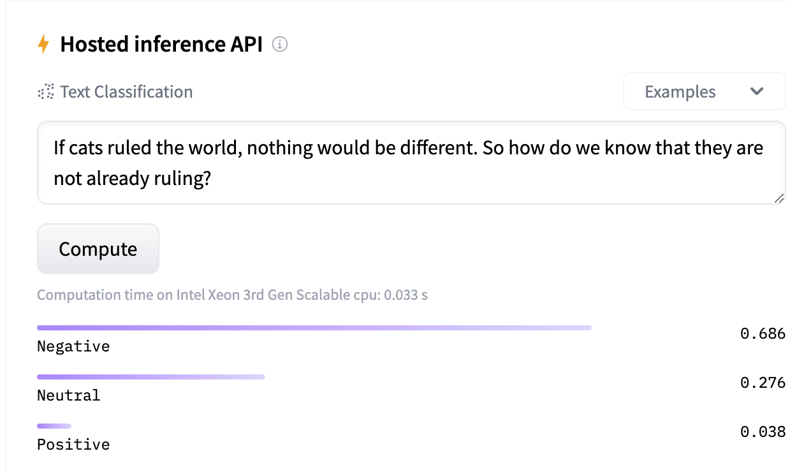
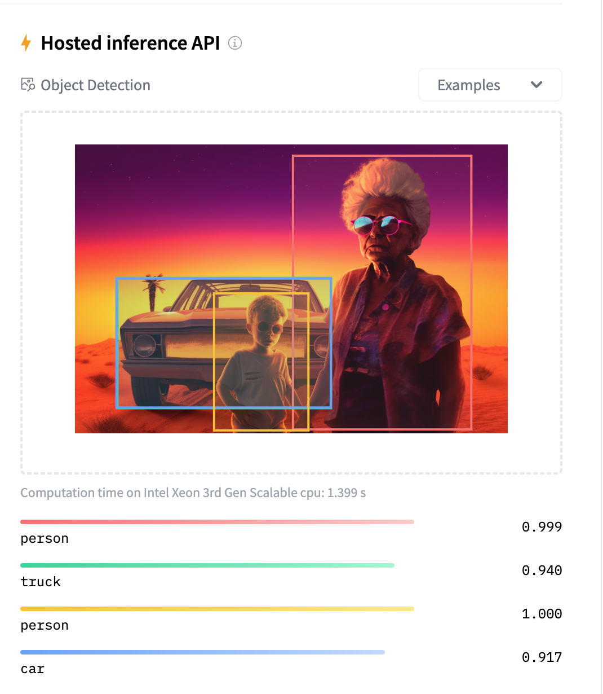
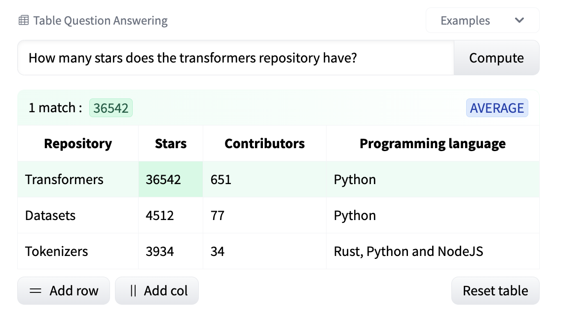

AI is all the rage right now. While it's not the first time in history that we believe we are on the cusp of a great leap in AI advancement only to have an "AI winter" fall upon the field. This time it feels different, and rather than waning investments in the field, we see many diverse organizations (and individuals) running towards ChatGPT and other ML models to enhance their operations. We can see their uses from Search Algorithms to medical diagnoses. While some argue that privately owned and privately licensed models will always have the upper hand on open source models, the opposite sentiment can also be found. No matter which side of the argument you fall, it can't be denied that open source models can provide great value for whomever chooses to use them.
In this article we will dive into a few of these models and see what they are capable of. We will give an overview of different areas they can be used in and provide links for those who want to read their respective research paper. We will see models for sentiment analysis, image recognition, voice recognition, named entity recognition, text generation, and text-to-image generation. And as a surprise (SPOILER ALERT!), we may recognize that some of these models have multiple areas of applications.
1. Sentiment analysis
Natural language processing (NLP) is a field where we can harness the power of computers to make sense of human language. That's where we see models such as BERT or BART being used for different tasks. When it comes to sentiment analysis, we often see a BERT-type model being used. One example is XLM-RoBERTa, a multilingual model. In this example we can see it being used for classifying a text based on 3 different categories, and the probability that the text expresses a particular sentiment:

The model in this case is cardiffnlp/twitter-xlm-roberta-base-sentiment. It is further specialization of XLM-RoBERTa by training on 198M tweets. So to no surprise it can make sense of emojis as well. However, it has difficulty detecting sarcasm. There are particular ventures 1, 2 that seeks to rectify that!

User generated image using Bing Image Creator
Read the paper introducing XLM-RoBERTa, from November 2019: Unsupervised Cross-lingual Representation Learning at Scale.
2. Image classification with ResNet
From Microsoft Research comes this open source Image Recognition model, Residual Network (ResNet). In its basic form, it will try to classify a single dominant object in a picture. Derived models comes with more features, such as detecting multiple objects in a picture.
In this example, the facebook/detr-rednet-101 model detects 3 objects, but gives two classifications for the car, either a truck or a car. It also successfully detects the two persons.

The ResNet model was introduced by Microsoft Research in December 2015 with the paper Deep Residual Learning for Image Recognition. The detection transformer (DETR) variant from Facebook AI was introduced in May 2020 with the paper End-to-End Object Detection with Transformers.
3. Voice recognition with Whisper
Automatic speech recognition is a task where a model is used to enable a program to process human speech into text. So in essence, it is a speech-to-text model. Whisper is a popular model from OpenAI. It can be used for transcribing recordings and real-time speech recognition tasks.
In this example I'm posing the model with an important query: {{ imager_standard( asset='articles/elixir/opensource-models/whisper-01.png', alt='Speech is transcribed to "Just because you can Fourier transform a cat doesn't mean you should, but really you really should.".', class='center' ) }}
Whisper was introduced in December 2022 in the paper Robust Speech Recognition via Large-Scale Weak Supervision.
4. Named Entity Recognition
A useful task in processing language is extracting tokens from text, such as recognizing if a location or a person is mentioned, or perhaps some grammatical features. BERT is often used for this as this model is good at taking the context into account, and if multilingual support is needed, XLM-RoBERTa can be applied.
In this example we are using a RoBERTa model trained on English to detect persons, location, and organization:

Read about the RoBERTa model, introduced in July 2019, from Facebook AI in the paper RoBERTa: A Robustly Optimized BERT Pretraining Approach.
5. Text Generation
This is one of the tasks that has lead to some AI-craze of late, especially when a Text Generation model is being used as a chat partner. ChatGPT based on GPT versions 3+ and BARD based on PaLM, are two examples of this. But neither is currently on an open source license. HuggingChat is closer to open-source, but it is based on a LLaMA derivate and so it has a different kind of license attached (not any of the common open-source licenses like Appache 2.0 or MIT). There are more specialized conversational models, like facebook/blenderbot.
But if we want to take a look at a simpler text-generation task, without the conversational part, we can find many available models. DistilGPT2 is a smaller variant of GPT version 2, an open-source model. Here it is in action, where we can see it generate one word at a time.
Read the paper behind GPT from OpenAI: Language Models are Unsupervised Multitask Learners.
An up-and-coming large language model, Falcon, is another open-source model. Compared to the other alternatives here, this one is bigger and more resource-intensive. But work is being done to make it work on lighter commercial machines.
6. Image Generation with Stable Diffusion
Stable Diffusion is a text-to-image diffusion model from Stability AI. Released in August 2022 it is an open-sourced licensed model that in short "strives for both the open and responsible downstream use of the accompanying model".
Hugging Face has released a native application for Mac: Diffusers. Showcased above, we can choose one of the available versions, write a prompt, and number of steps (the higher the steps, in general, the higher the quality).
A paid service to use the different versions of Stable Diffusion do also exist. Stability AI offers DreamStudio, where we can generate images right in the browser.
Bubbler: Text Summarization
There are models that have trained on texts that have been distorted and the models then should be able to recreate the text in its original form. This way of training has led to models like BART being well suited to tasks where they should distil a body of text in to smaller segments in a way where it does not lose too much information.
An example of this is facebook/bart-large-cnn, which is a BART model that has been trained on CNN Daily Mail. When summarizing the very first paragraph of Charles Dickens's "A Tale of Two Cities" we get:
"It was the best of times, it was the worst of times," he says. "We were all going direct to Heaven, we were all going direct the other way". "We had everything before us, we had nothing before us," he adds. "The spring of hope" was the winter of despair.

User generated image using SDXL Beta
Bubbler: Q/A
Question and Answer is a task well suited for models that take context of words into account. The BERT-family of models are often used here. In general, there are in general three types of Q/A models: extractive, open-generative, and closed-generative. Extractive models can extract the answer from the provided context (be it text, table, or markup). Open-generative models glean the answer from the context and generate free text as an answer. Closed-generative models do not need a provided context. They are trained within a domain and the answer is purely generated by the model.
Extractive model example
With the DistilBERT model, we can see how it finds the sentence that best can answer the question and extract it from the provided context:
Context:
Quantum machine learning is the integration of quantum algorithms within machine learning programs. The most common use of the term refers to machine learning algorithms for the analysis of classical data executed on a quantum computer, i.e. quantum-enhanced machine learning. While machine learning algorithms are used to compute immense quantities of data, quantum machine learning utilizes qubits and quantum operations or specialized quantum systems to improve computational speed and data storage done by algorithms in a program.Question:
What is an advantage of using quantum machine learning?Answer:
improve computational speed and data storage
There are also contexts that can be in table-format. The Google/TAPAS model is used in this example to find the correct answer from a table-cell:

TAPAS is a BERT-like model trained on English Wikipedia articles. It trained in a self-supervised way where it learned to associate texts with tables, as well as learned numerical reasoning. Read more about the model in its accompanying paper from 2020 by Google Research: TAPAS: Weakly Supervised Table Parsing via Pre-training.
Open-generative model example
An open-generative model will rely on contexts to freely generate answers. The context is sometimes a database of documents, as is the case for Wikipedia Assistant. It provides a Long-Form Question Answering that can encode the question to fetch relevant documents (context) and a BART model that can parse the provided context to generate an answer.
Question:
What is an advantage of using quantum machine learning?Answer
Quantum machine learning is an area of research that is still very much in its infancy. The most common use of the term refers to machine learning algorithms for the analysis of classical data executed on a quantum computer, i.e. "quantum-enhanced machine learning" (QML). The main advantage of QML is that it can be applied to a large number of data sets at once. For example, if you have a large set of data, and you want to learn how to classify it, you can use QML to do this. However, the problem is that QML can't be used to solve all of the data sets in the same way that a classical machine learning algorithm can. For instance, you might want to use a QML algorithm to solve the problem of how to categorize a large collection of images, but you can't use a classical algorithm to do the same thing with the same number of images. So, you need to use quantum machine learning to solve this problem. Another advantage is that you don't have to worry about the fact that the data set you're trying to classify is quantum.
Found contexts:
[ { "wikipedia_id": "30303286", "title": "Decoding Reality", "text": "Quantum computers offer a search advantage over classical computers by searching many database elements at once as a result of quantum superpositions. A sufficiently advanced quantum computer would break current encryption methods by factorizing large numbers several orders of magnitude faster than any existing classical computer. Any computable problem may be expressed as a general quantum search algorithm although classical computers may have an advantage over quantum search when using more efficient tailored classical algorithms. The issue with quantum computers is that a measurement must be made to determine if the problem is solved which collapses the superposition. Vedral points out that unintentional interaction with the environment can be mitigated with redundancy, and this would be necessary if we were to scale up current quantum computers to achieve greater utility, i.e. to utilize 10 qubits have a 100 atom quantum system so that if one atom decoheres a consensus will still be held by the other 9 for the state of the same qubit.\n", "section": "Section::::Contents.:\"Surfing the Waves: Hyper-Fast Computers\".\n", "start_paragraph_id": 20, "end_paragraph_id": 20, "start_character": 0, "end_character": 1055, "answer_similarity": "0.82" }, { "wikipedia_id": "44108758", "title": "Quantum machine learning", "text": "Quantum machine learning is an emerging interdisciplinary research area at the intersection of quantum physics and machine learning. The most common use of the term refers to machine learning algorithms for the analysis of classical data executed on a quantum computer, i.e. \"quantum-enhanced machine learning\". While machine learning algorithms are used to compute immense quantities of data, quantum machine learning increases such capabilities intelligently, by creating opportunities to conduct analysis on quantum states and systems. This includes hybrid methods that involve both classical and quantum processing, where computationally difficult subroutines are outsourced to a quantum device. These routines can be more complex in nature and executed faster with the assistance of quantum devices. Furthermore, quantum algorithms can be used to analyze quantum states instead of classical data. Beyond quantum computing, the term \"quantum machine learning\" is often associated with classical machine learning methods applied to data generated from quantum experiments (i.e. \"machine learning of quantum systems\"), such as learning quantum phase transitions or creating new quantum experiments. Quantum machine learning also extends to a branch of research that explores methodological and structural similarities between certain physical systems and learning systems, in particular neural networks. For example, some mathematical and numerical techniques from quantum physics are applicable to classical deep learning and vice versa. Finally, researchers investigate more abstract notions of learning theory with respect to quantum information, sometimes referred to as \"quantum learning theory\".\n", "section": "", "start_paragraph_id": 1, "end_paragraph_id": 1, "start_character": 0, "end_character": 1704, "answer_similarity": "0.70" }, { "wikipedia_id": "44108758", "title": "Quantum machine learning", "text": "Another approach to improving classical machine learning with quantum information processing uses amplitude amplification methods based on Grover's search algorithm, which has been shown to solve unstructured search problems with a quadratic speedup compared to classical algorithms. These quantum routines can be employed for learning algorithms that translate into an unstructured search task, as can be done, for instance, in the case of the k-medians and the k-nearest neighbors algorithms. Another application is a quadratic speedup in the training of perceptron.\n", "section": "Section::::Machine learning with quantum computers.:Quantum machine learning algorithms based on Grover search.\n", "start_paragraph_id": 10, "end_paragraph_id": 10, "start_character": 0, "end_character": 569, "answer_similarity": "0.70" }, { "wikipedia_id": "44108758", "title": "Quantum machine learning", "text": "Quantum-enhanced machine learning refers to quantum algorithms that solve tasks in machine learning, thereby improving and often expediting classical machine learning techniques. Such algorithms typically require one to encode the given classical data set into a quantum computer to make it accessible for quantum information processing. Subsequently, quantum information processing routines are applied and the result of the quantum computation is read out by measuring the quantum system. For example, the outcome of the measurement of a qubit reveals the result of a binary classification task. While many proposals of quantum machine learning algorithms are still purely theoretical and require a full-scale universal quantum computer to be tested, others have been implemented on small-scale or special purpose quantum devices.\n", "section": "Section::::Machine learning with quantum computers.\n", "start_paragraph_id": 3, "end_paragraph_id": 3, "start_character": 0, "end_character": 833, "answer_similarity": "0.64" } ]
Read about Long-Form Question Answering in this article from February 2022 by Vladimir Blagojevic: Long-Form QA beyond ELI5: an updated dataset and approach
If you are intrigued by Quantum Machine Learning (QML), there's a course from IBM for self-learners: Quantum Machine Learning.
Closed-generative model example
From OpenAssistant comes the supervised-fine-tuning model: Open-Assistant SFT-4 12B.
Question:
What is a meme, and what's the history behind this word?Answer
A meme is a cultural idea, behavior, or style that spreads from person to person within a culture. It is often used to describe a unit of cultural information that is passed from one individual to another. The word "meme" was first used in the 1960s to describe a type of cultural unit that was similar to a gene in that it could be passed from one individual to another.
In closing
We have seen many different ML tasks - and that different models are seemed to be used for different tasks. BERT and BART are models that looks to be used in similar contexts, but whereas BERT seem better suited for taking apart a sentence, BART seem better at distilling meaning from a larger body of text into a summarized body, and for text generation. We have also seen models for making sense of images (ResNet), voice recognition (Whisper), and image generation (Stable Diffusion).
We have given a quick overview over some of the most exciting models and how they are used. But there are a tonne more out there to discover. And to use. You can start exploring by heading over to huggingface.co and take some models for a spin, right on their site.

User generated image using SDXL Beta